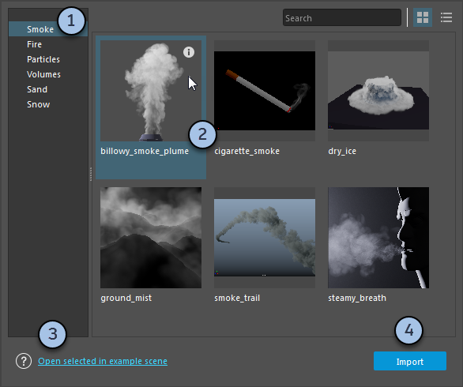
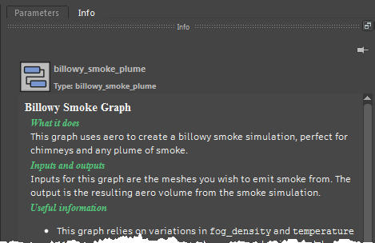

提供了各种示例图表，您可将其用作自己效果的起点，或研究这些示例图表以了解 Bifrost 的更多信息。
要在 Maya 中加载示例图表，请选择“窗口 > Bifrost 浏览器”(Windows > Bifrost Browser)。

如果场景中未显示图表的正确结果，请确保在 Maya 的“时间滑块”(Time Slider)首选项中将“播放速度”(Playback speed)设置为“播放每一帧”(Play every frame)。
如果在图表顶层级未选择任何节点，可以在“信息”(Info)面板中查看图表相关信息。

您可以发布自己的图表并与他人共享。发布的图表也会显示在“Bifrost 浏览器”(Bifrost Browser)中。 请参见以图表形式发布效果。